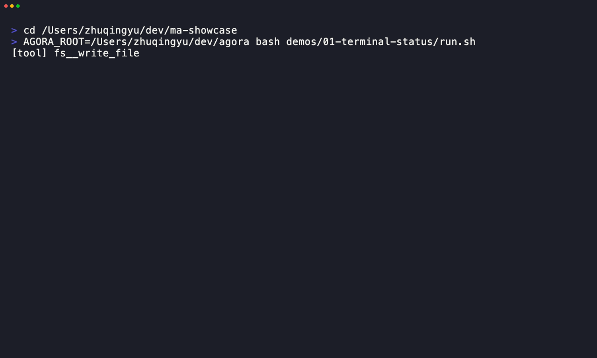

<!doctype html>
<html lang="en">
  <head>
    <meta charset="utf-8">
    <meta name="viewport" content="width=device-width, initial-scale=1">
    <title>MA + Agora short card</title>
    <style>
      :root {
        color-scheme: dark;
        font-family: ui-sans-serif, -apple-system, BlinkMacSystemFont, "Segoe UI", sans-serif;
      }

      * { box-sizing: border-box; }

      body {
        align-items: center;
        background: #111827;
        color: #f8fafc;
        display: flex;
        height: 1920px;
        justify-content: center;
        margin: 0;
        overflow: hidden;
        width: 1080px;
      }

      main {
        display: flex;
        flex-direction: column;
        gap: 32px;
        height: 100%;
        justify-content: center;
        padding: 120px 84px;
        width: 100%;
      }

      .eyebrow {
        color: #22d3ee;
        font-size: 28px;
        font-weight: 800;
        letter-spacing: 2px;
      }

      h1 {
        font-size: 80px;
        letter-spacing: 0;
        line-height: 1.05;
        margin: 0;
        max-width: 850px;
      }

      p {
        color: #cbd5e1;
        font-size: 36px;
        line-height: 1.35;
        margin: 0;
        max-width: 860px;
      }

      .accent { color: #f472b6; }
      .link { color: #67e8f9; font-size: 30px; overflow-wrap: anywhere; }

      .terminal {
        background: #0b1020;
        border: 2px solid #334155;
        border-radius: 12px;
        margin-top: 24px;
        width: 100%;
      }
    </style>
  </head>
  <body>
    <main id="card"></main>
    <script>
      const scene = new URLSearchParams(window.location.search).get("scene");
      const card = document.getElementById("card");
      const scenes = {
        intro: `
          <div class="eyebrow">MA + AGORA / REAL LOCAL RUN</div>
          <h1>A local coding agent got <span class="accent">one job.</span></h1>
          <p>Build a playable game. Then let the browser judge it.</p>
        `,
        tool: `
          <div class="eyebrow">PROOF 1</div>
          <h1>It used a real file tool.</h1>
          <p>The agent called <span class="accent">fs__write_file</span> and produced the game.</p>
          
        `,
        browser: `
          <div class="eyebrow">PROOF 2</div>
          <h1>Then the browser clicked it.</h1>
          <p>The generated page reached a verified result state.</p>
        `,
        outro: `
          <div class="eyebrow">NO STAGED DEMO</div>
          <h1>Prompt, artifact, and verifier are public.</h1>
          <p class="link">github.com/zimoos/ma-showcase</p>
        `,
      };
      card.innerHTML = scenes[scene] ?? scenes.intro;
    </script>
  </body>
</html>
